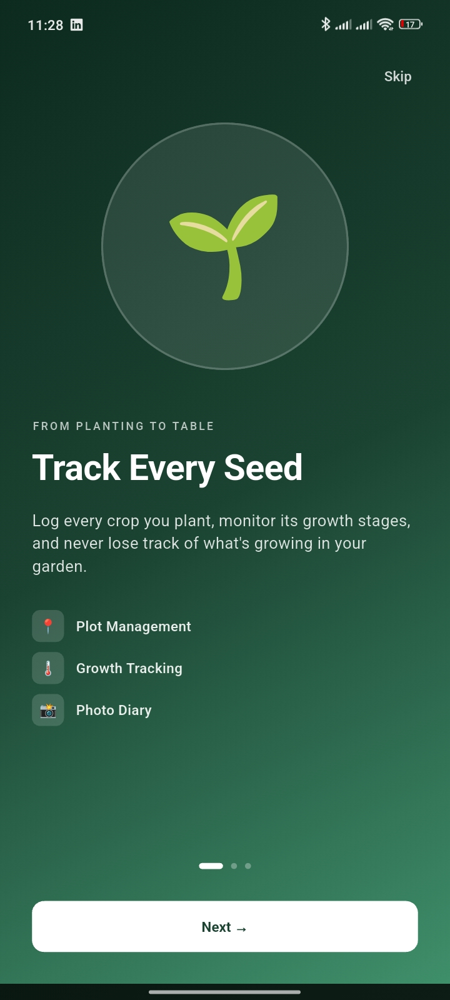
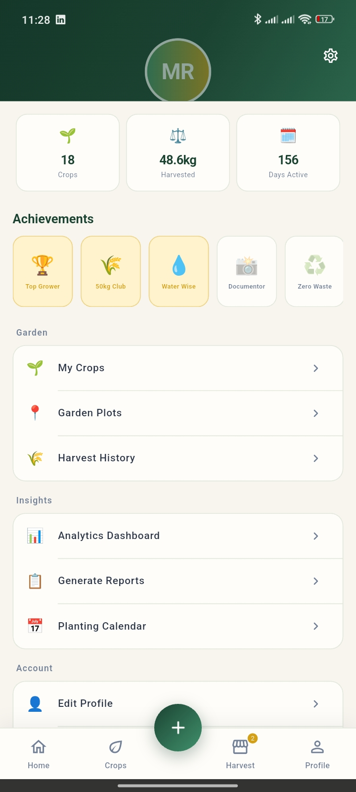

Where it happens
Every stamp starts on the grower's phone
Plots, irrigation, pest checks, and the harvest lock all live in the same app a grower already opens every morning — the traceability is a side effect of doing their normal work.
See grower features →